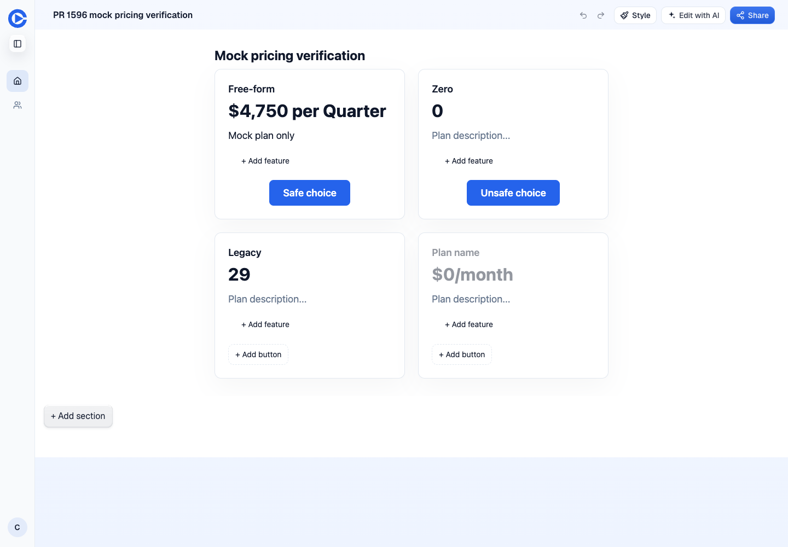
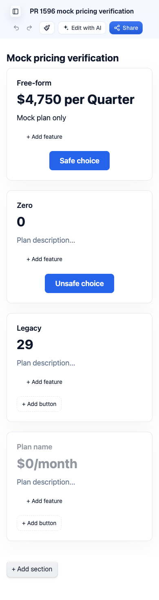
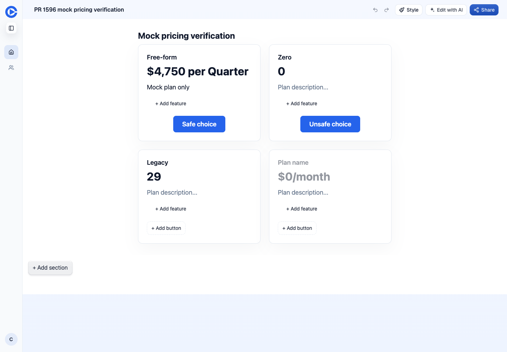
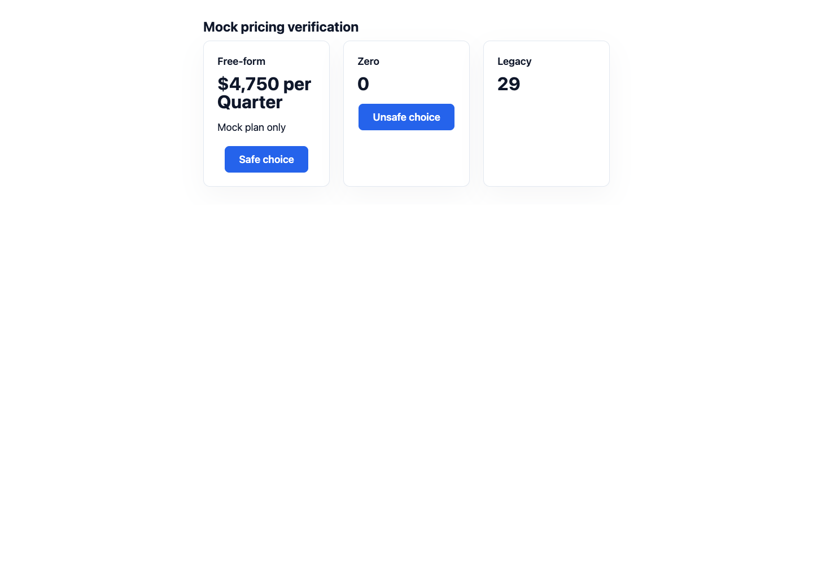
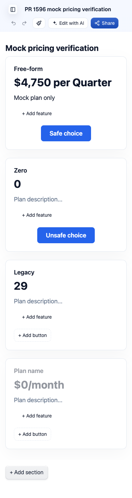
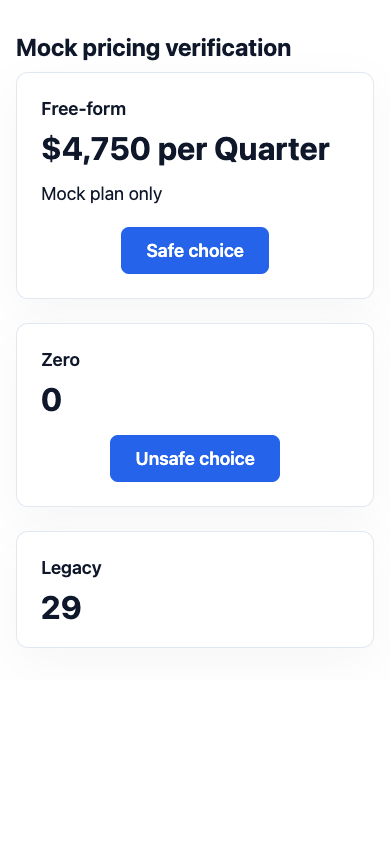

Pull request · Issue · PR preview
Checks
| Check | Result | Evidence |
|---|---|---|
| Pricing renderer parity | Pass | Merge base has 5 failed and 1 passed. Head has 6 passed. The PR says 12 cases, but this file defines 6. |
| Public HTML preserved | Pass | All six full-page fixture renders are byte-for-byte equal. Recursive diff is empty, 0 bytes. |
| Live preview identity | Pass | Authenticated doctor matched the requested head and the preview deploy-info. |
| Desktop and mobile | Pass | Editor and public captures at 1440 and 390 CSS pixels. Prices are $4,750 per Quarter, 0, and 29. Legacy currency and unit fields are not appended. |
| Unsafe CTA | Pass | Unsafe choice is a span with no href or anchor ancestor in the editor. Public rendering adds aria-disabled=true. No javascript or data link exists in either pricing section. |
| Safe CTA and share | Pass | Public Safe choice points to https://example.com/buy. Editor labels are editable, not navigation links. Share opens and flags the unsafe destination. |
| Public intent regression | Pass | Existing Playwright regression passed against this mock page, including both widths. |
| Gate | Pass | ./scripts/gate.sh exited 0. All four checks passed. React Doctor printed a setup prompt rather than an analysis result, although the lint command returned success. No project setup was changed. |
| Browser errors | Pass | No page errors during either capture run. CLI logger recorded 1519 network events and no failed requests or HTTP errors through both captures. |
| Baseline difference | Note | Editable canvas retains the fourth empty card and editor controls. Public rendering omits it. The same difference occurs on PR 1590. |
What the parity test covers
The six fixture groups cover free-form and zero prices, legacy fields, blank features and plans, sanitized rich text, safe and unsafe CTAs, CTA-only rows, more than three plans, blank headings, and a unit-only legacy row. A throwaway TypeScript script outside the repo reused those exact fixture definitions and rendered each through renderJourneyPageDocument on the merge base and head. Each full HTML document was saved and compared with diff -r. The script and its bundle were deleted.
The test mounts LivePreview without onUpdateBlock, which selects ReadOnlyPricing. The real editor supplies onUpdateBlock and selects PricingEditor. These screenshots prove the editable canvas preserves its baseline behavior. They do not claim the live editor is a read-only preview.
Merge-base test output · Head test output · Gate summary · Public intent regression · Head DOM evidence · Baseline DOM evidence
After, PR 1596
Mock page was captured at /edit/c8b15960-0000-4000-8000-000000000001 and /page/n63srg on the PR preview. Both requests returned 200. The public response identified d1_content.
After at 1440 px



After at 390 px



Before, PR 1590
This baseline permits isolated mock writes. It is main plus a CSS token change, at head 2ea76ccb7c46a591359530a8e879272d6eb5869e, with the same base 66af49adf. The same mock was captured at /edit/c8b15960-0000-4000-8000-000000000001 and /page/fn3jz8. No staging or production writes were made.
Before at 1440 px




Before at 390 px




Writes and cleanup
Only the mock Pro account was used. On each of PR 1596 and PR 1590, pages_create created page c8b15960-0000-4000-8000-000000000001, pages_publish published revision 1, and pages_delete removed that page after capture. Public visits also generated the app's normal view telemetry. No direct D1 SQL was needed. No shared fixture was edited. The evidence remains available here after the mock pages are removed.
Waved through: none. The test count and pre-existing editable-canvas differences are notes, not failed requirements or approval to merge.